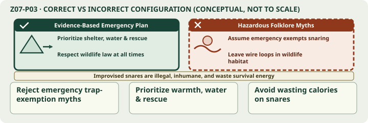

Z07-P03 · Traps and snares · New manuscript
No Emergency Legal Exemption for Traps or Snares
Dispel survival folklore claiming an outdoor emergency automatically permits setting improvised traps or snares.
When it applies · Backcountry emergency planning and legal-boundary training.
Equipment · Emergency shelter, water treatment, and signaling equipment.

Actions
- Reject the common myth that an outdoor emergency automatically grants a legal exemption to deploy traps, wire snares, or deadfalls.[L01, L03]
- Prioritize proven survival essentials—shelter, thermal protection, safe drinking water, medical stabilization, and rescue signaling—which address immediate fatality risks far more reliably than improvised food capture.[L01, T01]
- Recognize that unauthorized wire snares left behind become persistent ghost-entanglement hazards that maim protected wildlife, pets, and people long after an incident ends.[L02, L13]
Failure recognition · Spending dwindling daylight and calories building illegal improvised traps worsens hypothermia risk while endangering protected species.[L01, L02, T01]
Verify · Emergency planning centers on shelter, hydration, signaling, and full compliance with wildlife protection laws.[L01, T01]
Stop or change course · Stop any plan that proposes improvised traps or snares as a backcountry survival shortcut.[L01, L02, L11]
Evidence and editorial notes
- L01 · Minnesota DNR · Minnesota Trapping Regulations and Fur Harvest Rules (Current web edition)
- Section: Minnesota trapping licensing, seasons, and statutory limits · Conditions: Any regulated trapping activity or legal reference in Minnesota
Support: Trapping is strictly regulated by license, season, species, trap type, set location, check intervals, and landowner permission; unauthorized trapping is illegal.
Limitations: Emergency narratives never create an exemption to set traps or snares; verify current statute and DNR handbook every season. · Conflicting evidence: None noted.
Editorial note: Primary Z07 legal boundary. · Specialist reviewer: Wildlife law and DNR enforcement reviewer
Primary source · checked 2026-11-25 - L02 · Association of Fish & Wildlife Agencies · Best Management Practices for Trapping and Furbearer Welfare (Current web edition)
- Section: AFWA Best Management Practices for animal welfare and selectivity · Conditions: Evaluating trapping principles, welfare, and non-target risk
Support: AFWA BMPs evaluate regulated devices on animal welfare, efficiency, selectivity, user safety, and practicality through scientific testing.
Limitations: Improvised traps and snares lack scientific welfare testing and selectivity controls, causing severe injury and non-target capture. · Conflicting evidence: None noted.
Editorial note: Anchors Z07 welfare & conceptual classification without building instructions. · Specialist reviewer: Wildlife welfare scientist
Primary source · checked 2026-11-25
Current assessment · A04-L02 (2026-11-25) · Bounded support confirmed from an alternate source (A04): Supports regulated-device evaluation criteria in the program. Minnesota hunting index is the wrong evidence section. No device construction or authorization follows. Limits: Specialist review PENDING (Wildlife welfare scientist); publication HOLD. All release decisions pending. - L03 · U.S. Fish & Wildlife Service · Endangered Species Act Protections and Take Prohibitions (Current web edition)
- Section: Endangered Species Act strict take prohibitions · Conditions: Federal threatened and endangered species habitats (e.g., Canada lynx)
Support: Incidental or intentional capture, injury, or harassment of federally listed species violates the Endangered Species Act and triggers strict reporting and gear restrictions.
Limitations: Trapping zones near lynx or listed-species ranges carry additional federal/state exclusion rules. · Conflicting evidence: None noted.
Editorial note: Enforces ESA species protection in Z07. · Specialist reviewer: Federal wildlife legal reviewer
Primary source · checked 2026-11-25 - L11 · Association of Fish & Wildlife Agencies · Best Management Practices for Trapping and Furbearer Welfare (Current web edition)
- Section: Conceptual classification of historic vs regulated capture categories · Conditions: Educational overview of mechanical hazard types without construction specs
Support: Historical and regulated devices fall into restraining (foothold, cage, cable restraint) and killing (body-grip) hazard classes with distinct spring-energy risks.
Limitations: Conceptual awareness supports hazard recognition only and must never include trigger dimensions, wire specs, or placement instructions. · Conflicting evidence: None noted.
Editorial note: Enforces Z07 no-actionable-construction editorial boundary. · Specialist reviewer: Safety and wildlife ethics reviewer
Primary source · checked 2026-11-25 - L13 · Minnesota DNR · Scientific and Natural Areas Visitor Rules and Prohibitions (Current web edition)
- Section: Zero-disturbance scientific preserve ethics · Conditions: Sensitive habitats, wetlands, and rare-species corridors
Support: Natural-area conservation prohibits altering vegetation, digging pits, or leaving wire/cordage debris that entangles wildlife indefinitely.
Limitations: Abandoned wire or monofilament creates persistent ghost-entanglement hazards. · Conflicting evidence: None noted.
Editorial note: Addresses ghost-gear and environmental restriction. · Specialist reviewer: Conservation ecologist
Primary source · checked 2026-11-25
Current assessment · A04-L13 (2026-11-25) · Reopened: earlier closure narrowed (A04): Site rules support protection and restrictions. They do not establish a universal rule across land classes or an indefinite entanglement duration. Limits: Specialist review PENDING (Conservation ecologist); publication HOLD. All release decisions pending. - T01 · American Red Cross · First Aid Steps (current web edition)
- Section: First Aid Steps > Check the scene; check the person · Conditions: Lay responder in United States; assess safety before contact
Support: Check scene safety, responsiveness, breathing and immediately life-threatening conditions.
Limitations: Lay guidance does not replace advanced clinical or rescue protocols. · Conflicting evidence: None; universal first-response opening gate.
Editorial note: Anchors scene-safety-first rule across Z01. · Specialist reviewer: EMS and wilderness medicine
Primary source · checked 2026-11-24
Source lineage · New manuscript (Z07 P18 legal boundary) · Classification · New manuscript.